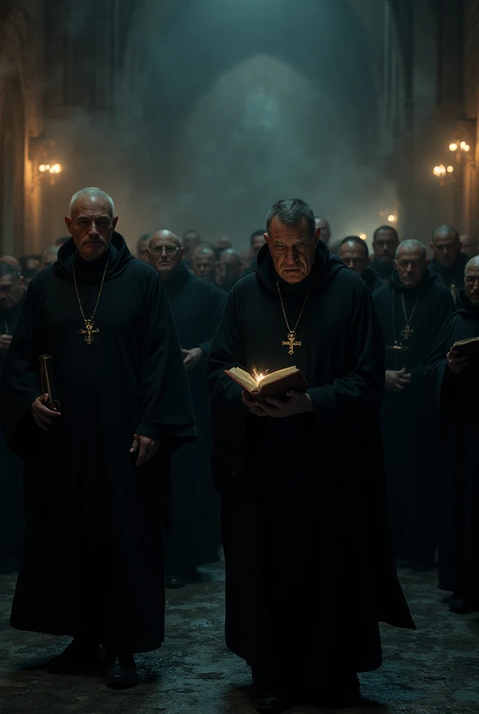

吸血鬼與女巫：神權崩壞 - 德古拉與伊索爾德的冒險
故事背景與目標
在這個由神權統治的虛構中世紀國度，教會的腐敗與專橫統治已經深入人心。教會的高層利用神的名義，壓制異端與無辜者，並在百姓中散播恐懼與仇恨。表面上，這個國家以信仰為依歸，實則腐敗與壓迫無所不在。
德古拉，曾經是虔誠的領主，一心為民服務，但教會的權力早已超越王權，腐化的神權與貪污的紅衣主教們讓他感到無比絕望。當他試圖揭露教會的黑暗面，卻被冤枉成為罪人，最終在陰謀下死去。當他復活為吸血鬼後，他決定不再忍受教會的壓迫，誓要推翻這個腐敗的體制。
伊索爾德，原本是一位才華橫溢的醫師與科學家，因為女性的智慧與能力遭到教會的忌憚與迫害。為了保命，她與魔鬼達成交易，獲得了永生與強大的魔法力量，並轉化為一位強大的女巫。她放棄了常人的生命，成為一個超越生死的存在，卻在心底依舊懷有對正義的渴望。
當德古拉與伊索爾德相遇後，他們聯手對抗腐敗的教會。他們在這個充滿謊言與暴政的世界中展開冒險，兩人決定利用各自的力量，推翻壓迫他們的神權，並為人民帶來光明。
玩家將扮演德古拉與伊索爾德，在這個開放世界中自由探索，揭開教會的秘密，挑戰聖騎士、解開謎團，並做出關鍵決策。你將體驗一場充滿黑暗、冒險、陰謀與反叛的旅程，為推翻神權鋪平道路，並改變這個世界的命運。
關於聖光教
※ 本遊戲中的宗教、角色與事件皆為虛構。遊戲透過聖光教這個虛構宗教諷刺中世紀教會的腐敗、權力濫用與宗教迫害問題，就如同《俠盜獵車手》用洛聖都影射洛杉磯的犯罪現象與美國時事一般。
聖光教是一個以「光明」為名、卻早已陷入陰影的神權體系。教會宣稱自己是「上帝」意志的傳聲筒，奉行「唯有聖光能洗淨罪」的信條，但在信仰的背後，是一場由權力、金錢與恐懼構築的虛偽王國。
信仰核心：上帝與十字架
信徒相信萬物皆由「上帝」創造，其意志由「十字架」象徵，代表「純淨、循環、救贖」。然而，隨著權力的集中與貪婪蔓延，聖光教早已將「信仰」變成了「鎖鏈」。
- 象徵符號：三重環（交疊三個光環）
- 顏色象徵：金、白、紅（信仰、純潔、犧牲）
- 信條：「唯有聖光能洗淨罪。唯有聖光能寬恕。背光者，終將被焚於黎明。」
階級結構
聖光教內部擁有嚴密的階級制度，每一層代表著不同的神權與腐敗。
- 黑袍教士：身穿黑袍、手持十字聖環，負責傳教與懺悔審訊。通常成群巡邏，盲目執行教會命令。
- 紫衣主教：身穿紫袍、手持聖環杖，統管地方聖堂與審判儀式。外表慈悲，內心冷酷。
- 獵巫人：身著深紅皮衣與鎖甲，專職追捕異端與超自然生物。他們並非教會的正式員工，而是由教會默許或授權的世俗追捕者。行動成群，狂熱而忠誠，但在追捕過程中經常造成大量冤死無辜，令民眾恐懼卻無法申冤。
- 聖騎士：全身銀甲、披白色披風的戰士，是聖環軍團的武力象徵。騎馬衝鋒，以光為刃，通常成群出現。
- 紅衣樞機：聖環議會高層，掌管審判與指令。紅袍金環，象徵神聖與腐敗的極致。
- 光之座：聖環教最高領袖，身穿純白法袍，多年未曾現身。傳言他早已死去，而教會只是奉行一個空洞的名字。
對異端與超自然的壓迫
聖環教自詡光明的守護者，但實際上以「淨化罪惡」為名迫害所有異端與不符合教義的人類與超自然生物。在這個世界中，唯一的吸血鬼是德古拉，唯一的女巫是伊索爾德。由於他們的力量極其強大，教會全力追捕，形成高壓氛圍。黑袍教士巡邏街巷懲戒異端信徒，獵巫人追捕女巫與血族，但在行動中常造成大量冤死無辜，令民眾恐懼卻無處申冤。聖騎士則以武力鎮壓大型抵抗，維護教會的統治與威嚴。玩家的行動會影響通緝等級，越多暴露行動就會吸引越高階層的追捕者。
教會腐敗象徵
- 贖罪券：信徒可用金錢購買「光的赦免」。
- 宗教制裁所：以拷問之名「淨化靈魂」。
- 聖遺物流轉：販賣虛假的聖物與奇蹟。
- 光之儀典：秘密儀式，用以延長高層壽命，實為吸取信徒生命力。
- 獵巫行動：以「清除異端」為名追捕女巫與魔法生物，但在過程中經常冤死大量無辜的人，民眾驚恐卻無法申冤。
神學矛盾
聖環教宣稱光能拯救人類，但真正照亮的只是他們自己的權位。許多教士早已忘記信仰的初衷。甚至流傳著一句禁語：「光源已死，聖環只是權力的幻影。」
遊戲中的定位
聖環教是玩家通緝系統的核心勢力。隨著通緝等級提升，將有越高階層的聖環教成員被派出追捕德古拉與伊索爾德。最終，紅衣樞機與光之座將親自出手，以「淨化異端」為名，試圖奪取不死之血。玩家面對的是唯一的吸血鬼與女巫，挑戰與故事張力皆因此集中，通緝系統也因此更具緊張感與策略性。
關於德古拉
基本資料
- 身高：一百九十五公分
- 體重：八十五公斤
- 生理年齡：三十五歲
- 頭髮顏色：黑色
- 眼睛顏色：
德古拉的圖片
常態下的德古拉伯爵：

使用超能力時或剛吸完血後的德古拉伯爵：

德古拉伯爵的全身照：
在人類形態下長著蝙蝠翅膀的德古拉伯爵
能力與生理狀況
- 特殊能力：
- 變形（蝙蝠、黑色霧氣）
- 催眠
- 控制天氣（召喚烏雲、雨、閃電）
- 超自然力量賦予身體的附著力（使他能夠倒吊在牆上和不借助任何工具爬牆）
- 夜視能力
- 超乎常人的速度、力量、耐力
- 強大的恢復力
- 在人類形態下長出蝙蝠翅膀（為了飛行用，當然翅膀也可以是物理武器）
- 優勢：
- 力氣相當於二十個成年男子
- 移動速度相當於亞音速
- 彈跳力相當於好幾層樓高
- 受傷後傷口能在幾秒內復原
- 對物理攻擊的抗壓性非常高
- 在無光的情況下依然看得清楚
- 弱點：
- 怕陽光
- 怕銀製品
- 怕十字架
- 怕聖水
- 怕火焰
- 無法進教堂
- 食物：血液（需要咬對方）
- 血液顏色：藍色
- 精液顏色：白色
- 是否有性需求：是，因為這是他還有一絲人性的象徵
- 是否有生殖能力：否，因為吸血鬼的本質是死人，所以精子也沒有生命力
- 是否需要拉屎或撒尿：否，因為他的飲食不再是正常人的模式
- 是否需要潔牙：否，因為他不需要吃普通食物
- 是否會流汗：否，因為吸血鬼的本質是死人，但流汗是活人的特徵
- 是否需要洗澡：否，因為他不會流汗，身體也不會發臭，但受傷時一樣需要到水療池裡療傷
背景故事
德古拉原本是虔誠的領主，心地善良、充滿愛心。他所治理的封地由神權主導，教會的地位高於貴族。雖身為領主，卻不得不屈服於教會的壓力。教會時常假借神之名義壓迫百姓、剝削人民，甚至壓制異議者。
某日，德古拉發現紅衣主教的貪污行為，試圖舉發並揭露真相，卻被教會反咬一口、誣陷他叛教與叛國，最終慘遭冤死。死後，他的靈魂墜入地獄，滿懷疑惑與憤怒，質問地獄之主：「我為何因善良與正義而受罰？」
地獄的主宰被他的真誠打動，並告訴他：「並非所有黑暗都是邪惡；真正的惡，是偽裝成光的腐敗。」於是魔鬼以黑魔法讓他復活，使他成為擁有不死之軀與強大力量的吸血鬼——反抗虛偽神權的象徵。
生活現況
復活成吸血鬼後，德古拉依然心懷正義，然而他的出現和復活引來了神權的強烈反應。聖騎士們視他為異端並對他發起了追捕。最終，他在一次與聖騎士的對抗中受傷，並被他們逼入絕境。
就在德古拉幾乎被聖騎士擊敗的時候，伊索爾德出現並救了他。伊索爾德是一名強大的女巫，擁有強大的治療魔法與心靈感應能力。她將德古拉帶回她的森林木屋，並提供他療傷的場所，從此，兩人開始了曖昧而複雜的關係。德古拉也成為伊索爾德的管家，負責木屋中的日常事務。
作為管家，德古拉除了幫助伊索爾德打掃和洗衣，還經常為她按摩，尤其是在她泡完澡後。按摩臀部與背部成為他們日常的一部分，這樣的互動既有實用性，也有深層的情感聯繫。
關於伊索爾德
基本資料
- 身高：一百六十三公分
- 體重：四十三公斤
- 生理年齡：三十五歲
- 頭髮顏色：紅色
- 眼睛顏色：綠色
伊索爾德的圖片
穿黑色巫師袍的伊索爾德

穿綠色巫師袍的伊索爾德
沒穿巫師袍的伊索爾德
能力與生理狀況
- 特殊能力：
- 隔空取物
- 隱形
- 火元素魔法
- 水元素魔法
- 土元素魔法
- 風元素魔法
- 製造防護罩
- 飛行（騎掃帚）
- 變形（黑貓、貓頭鷹）
- 治癒魔法
- 優勢：
- 弱點：物理能力與普通人無異
- 食物：人類的精氣（隔空吸取）
- 血液顏色：紅色
- 是否有性需求：是，因為她是活人，且適當地抒發性慾是活人保持健康的關鍵之一
- 是否有生殖能力：否，因為永生的代價便是失去生育能力
- 是否需要拉屎或撒尿：否，因為她早已對普通食物毫無感覺
- 是否需要潔牙：否，因為她不需要吃普通食物
- 是否會流汗：是，因為她本質上還是活人
- 是否需要洗澡：是，因為她會流汗，且泡澡也是她的日常消遣之一
背景故事
伊索爾德原本是一名醫師與科學家，擁有極高的智慧與醫術。然而在那個由神權統治的時代，女性的學識被視為對教義的威脅。教會因嫉妒她的成就與名聲，多次打壓她，甚至以「異端」之名試圖將她處以火刑。
在走投無路之際，伊索爾德決定向教會口中的“魔鬼”尋求庇護。當她與地獄之主接觸時，卻發現所謂的魔鬼並非如教會描述般邪惡，而是被誤解的存在。魔鬼告訴她：“善與惡不在於信仰，而在於行為。”
最終，伊索爾德以永生與魔力為代價，換取了自由與力量。她失去了生育能力與普通的飲食需求，但得以脫離教會的掌控。她選擇隱居於森林，以研究與魔法自娛，並在命運的安排下遇見了德古拉。
生活現況
伊索爾德居住在森林深處的木屋中，遠離塵世喧囂。她每日泡澡、冥想，並以魔法維護周圍的自然結界。德古拉成為她的管家與同伴，兩人之間時常有曖昧卻深刻的互動。雖名為主人與僕人，實則彼此在對抗教會的旅途中，找回了失落的人性與信念。
能量補充機制
德古拉的能量補充
能力來源：吸血
吸取方式：直接咬住對方吸取血液
- 動物的血：德古拉可吸取牠們的血，且這樣做是為了提供回血；不同大小動物的回血量不同。
- 人類的血：為了維持善良設定，德古拉不能吸取人類的血，但玩家仍可操控德古拉攻擊人類，引發通緝。
設計理念：平衡吸血本能與善良形象，保留開放世界自由度。
伊索爾德的能量補充
能力來源：精氣神吸取
吸取方式：隔空吸取，但需要在特定距離內
- 人類的精氣神吸取效果：人類被吸取後短暫昏倒，不會真正失血或死亡；吸取隱蔽，不會引發通緝；可以提供回血，但無法使伊索爾德恢復魔力值。
- 動物的精氣神吸取效果：動物被吸取後短暫昏倒，不會真正失血或死亡；可以使伊索爾德恢復魔力值但無法回血；不同動物提供的轉換效率不同——越危險的動物（野豬、熊、狼、狼人），提供的能量轉換效率就越高。
設計理念：忠於背景故事的同時提供策略選擇：可以選擇靠近無攻擊性但能量轉換效率低的動物，也可靠近攻擊性強但能量轉換效率高的動物。
能量補充總結
| 角色 |
能量來源 |
可吸對象 |
風險/限制 |
遊戲意義 |
| 德古拉 |
吸血 |
動物 |
不可吸人類的血；可攻擊人類但會引發通緝 |
保留吸血鬼能力，兼顧善良形象與開放世界自由度 |
| 伊索爾德 |
精氣神吸取 |
人類和動物都可以 |
吸取人類的精氣神是為了回血而不是回復魔力值，且不觸發通緝；吸取動物的精氣神是為了回復魔力值而不是回血，且越危險的動物的能量轉換效率越高 |
魔力值是魔法的能量來源，須謹慎看待 |
通緝等級系統
「罪在黑暗中萌芽，光明終將察覺。當夜之雙生的足跡染上血與火，聖教的審判便會降臨。」
在這個開放世界中，德古拉與伊索爾德的行動會影響他們的通緝等級。教會與王國勢力會依據通緝程度，動員不同層級的聖職者、獵人與兵團追捕玩家。通緝等級共有六個等級（零到五），每一級代表教會對玩家的警戒狀態與出動規模。
等級零：無通緝 — 平靜的夜
黑暗尚未被察覺，玩家可自由行動，無追捕者出現，非玩家角色對玩家態度正常。
等級一：輕微通緝 — 信徒的懼禱
黑袍教士手持十字架，低聲誦念祈禱文。聖光微弱，但信仰堅定。

- 敵人：黑袍教士
- 攻擊手段：聖經擊退、微弱聖光
- 傷害：低
- 行為觸發：在城鎮附近殺人、夜間施法被目擊
- 特性：主要造成行動干擾而非致命攻擊
等級二：中度通緝 — 紫袍的審判者
紫袍主教率領教士組成聖光法陣，聖水灑落如雨。神名迴盪，夜色開始退卻。

- 敵人：紫衣主教與黑袍教士小隊
- 攻擊手段：聖水潑灑、法陣封印、祈禱詛咒
- 傷害：中等，對德古拉特別致命，但對伊索爾德無效
- 特殊機制：主教可在場地形成「聖光法陣」，封印吸血鬼移動
等級三：高度通緝 — 獵巫人的火光
獵巫人的腳步回蕩在夜裡，他們的銀刃與火光比信仰更冷。那不是祈禱，而是審判。

- 敵人：獵巫人
- 平均身高：一八五公分
- 攻擊手段：銀製武器、十字弓、聖水手榴彈、火焰攻擊
- 傷害：高，兼具物理與聖屬性
- 特殊事件：玩家可能遭遇伏擊、被獵巫團設陷阱
- 掉落物：獵巫徽章，可用以製作抗聖屬防具
等級四：極度通緝 — 聖騎士的怒火
銀甲映照著烈日，聖騎士團自教堂大門疾馳而出。聖歌震盪，如軍鼓催命。

- 敵人：聖騎士
- 攻擊手段：銀劍、銀槍、聖盾衝擊、聖水炸彈
- 傷害：極高；行動迅速、抗魔性強
- 特殊機制：可破除隱形與瞬移技能
- 行動範圍：全地圖追擊，無安全區
- 敘事：教會認定玩家為不赦之罪，全力討伐
等級五：全面通緝 — 紅衣審判與聖屍的覺醒
紅衣樞機主教親臨戰場，他的祈禱聲令大地顫抖。被鎖於地窖的聖屍緩緩甦醒——那是教會最後的審判者。
第一階段：樞機主教
教會的最高審判者，身披紅袍，手持聖杖，象徵神聖不可侵犯的權威。

- 身高：一百七十公分
- 體重：九十公斤
- 年齡：七十歲
- 攻擊手段：聖光審判、神罰雷擊、群體聖歌增幅
- 特殊機制：每回合自動淨化地形，削弱玩家黑暗能力
- 敘事：教會最高審判官親自出動
第二階段：聖屍計畫
以異端之血，鑄神之怒。造物代號：聖屍十三號（法蘭克斯坦）。
- 起源：教會為對抗夜之魔族，秘密研發的禁忌兵器，由殉道者遺體與雷能構成
- 外觀：縫合巨軀，胸口嵌有脈動的聖徽爐心，鎖鏈連結至聖光導管
- 身高：兩百二十公分
- 體重：一百四十公斤
- 力量：三十個成年男子
- 奔跑速度：時速一百公里
- 彈跳力：十米高
- 武裝：
- 聖雷拳 — 可釋放連鎖雷擊
- 贖罪之錘 — 震地範圍攻擊
- 符文過載 — 生命值低時爆發聖光衝擊
- 控制機制：受樞機主教操控，若控制符文被破壞，會進入失控模式，攻擊所有目標
- 敘事潛台詞：保有人類記憶，渴望「創造主」的原諒
通緝行動影響表
- 殺死人類、破壞教堂：新增一個等級
- 殺死神職人員：新增二個等級
- 屠殺城鎮 / 挑戰主教級敵人：新增三個等級
- 進入教會禁地 / 干擾聖遺物：新增四個等級
- 破壞聖屍封印：直接觸發等級五
「黑夜之子，當聖光照進墳墓，連死者也被喚醒。問題是——那真的是救贖，還是另一場詛咒？」
德古拉與伊索爾德的木屋

他們的木屋位於山林深處，四周環境寧靜美麗，湖泊清澈見底，森林中綠意盎然。木屋前院擺放著兩張沙發，供他們休息。木屋旁邊有一座由大理岩組成的水療池，附近還有一張白色的按摩床，是伊索爾德休憩後常用的場所。
每當伊索爾德泡完水療池後，會趴在按摩床上等待德古拉為她按摩，這樣的互動充滿了深層的情感和依賴。
伊索爾德與德古拉在室外的水療池的親密行為
伊索爾德愛慕德古拉許久，不只是因為德古拉英俊，更是因為德古拉善良。
人類時期的德古拉很擅長治理領地，但繁忙的他鮮少有機會與女性接觸，因此他在女性面前會特別不自在，尤其是在美麗的女性面前。
於是，伊索爾德覺得德古拉的這副模樣很可愛，常常逗弄他。
伊索爾德也常常在水療池泡澡的時候邊想著德古拉帥氣的臉龐和肌肉邊搓揉自己的陰道並發出呻吟聲。
某天，德古拉在外面與聖騎士作戰一整天後，拖著傷痕累累的身體跑回家，那是聖水、聖光造成的傷口。
伊索爾德看到德古拉這副模樣，心疼地告訴德古拉趕緊把所有衣服脫了並進入水療池療傷。
德古拉走到水療池的岸邊並脫去所有衣物，然後全身赤裸地走進水療池裡。
由於水療池被伊索爾德施加治癒魔法，德古拉便很快在溫暖舒適的水療池中睡著了。
在室內的伊索爾德偷窺德古拉全身赤裸的模樣後，頓時來了性致，接著也偷偷來到水療池中。
伊索爾德走到水療池中並脫去所有衣物，然後全身赤裸地走進水療池裡。
伊索爾德走到熟睡中的德古拉身旁，然後靠在他肩膀上，打算趁他醒來時給他一個驚喜。
德古拉醒來後聞到誘人的體香，於是他心想：「這迷人的香味，該不會是...她？！」
德古拉轉頭一看，果然是伊索爾德正赤裸地靠在他肩膀上，這讓德古拉既害羞又驚慌。
伊索爾德美麗的臉蛋和在水中若隱若現的火辣身材，讓德古拉頓時勃起。
但矜持的德古拉不希望自己的心思被女人看穿，於是便大聲問道：「你...在做甚麼？！」
伊索爾德聽到德古拉的質問聲，便調皮地回答道：「我在幫你治療傷勢，你的傷口還沒完全好呢！」隨即便吻了上去。
接著伊索爾德直接將頭靠到他耳邊小聲問道：「其實你對我有生理上的感覺，對吧？」
德古拉聽到伊索爾德的話，頓時臉紅心跳加速，於是他便結巴地回答道：「才...才沒有呢！」
伊索爾德見德古拉如此害羞，便說道：「你嘴上說沒有，但你的身體很誠實喔！」
說完後，伊索爾德便主動地將雙手放在德古拉的胸膛上，並開始輕輕地撫摸他的胸肌。
接著伊索爾德還將手伸到水裡，然後摸到德古拉腫脹的陰莖。
伊索爾德見德古拉的陰莖已經硬挺起來，便開心地笑了起來，然後說道：「看來你是真的對我有感覺呢！」
接著伊索爾德便開始用手為德古拉按摩陰莖，並一邊輕聲地說道：「放鬆點，讓我好好幫你按摩喔！」
德古拉見伊索爾德如此主動，便不再抗拒，並開始享受伊索爾德的按摩。
伊索爾德一邊按摩德古拉的陰莖，一邊用嘴巴輕輕地吻著他的脖子和耳朵，這讓德古拉感到無比的愉悅。
隨後，伊索爾德也把德古拉的手指放入自己的陰道裡，並要求德古拉搓揉。
德古拉見伊索爾德如此主動，便開始用手指搓揉她的陰道，這讓伊索爾德感到非常的興奮。
德古拉還吸允伊索爾德的乳頭，讓她感到高潮。
最後，伊索爾德感到無比的興奮，於是便大聲地喊道：「我要高潮了，德古拉！」
德古拉聽到伊索爾德的喊聲，便加快了手指的搓揉速度，並用力地按摩她的陰蒂。
接著，她倆手牽手赤裸地走到木屋前院的沙發上繼續做。
隨後，伊索爾德將德古拉的陰莖放入自己的陰道裡，然後兩人就這麼在沙發上度過歡愉的時光。
德古拉射精了，然後伊索爾德的陰道流出濃濃的白色液體。
接著，伊索爾德用嘴巴幫德古拉清理還殘留在他陰莖裡的精液。
隨後，伊索爾德便靠在德古拉身上睡著了，德古拉則輕輕地撫摸她的頭髮，心中充滿了對她的愛意與保護慾。